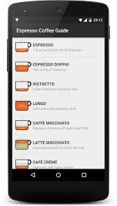

¿Qué debe tener una buena app para cafeterías?
Las aplicaciones móviles pueden convertirse en una herramienta útil para mejorar la relación entre una cafetería y sus clientes. Una aplicación bien diseñada debe ser sencilla, rápida, y fácil de utilizar.
Una de sus funciones principales puede ser mostrar el menú de productos. El cliente puede consultar las bebidas, alimentos, precios y promociones sin necesidad de esperar para recibir información.
Otra función importante es permitir la realización de pedidos. Tambien pueden incorporarse opciones como promociones, notificaciones y programas de fidelización para mantener una comunicación constante con los clientes.
Una aplicación para cafeterías debe enfocarse principalmente en facilitar la experiencia del usuario. Por esta razón, un diseño claro y una navegación sencilla sen elementos fundamentales.
Regresar al inicio